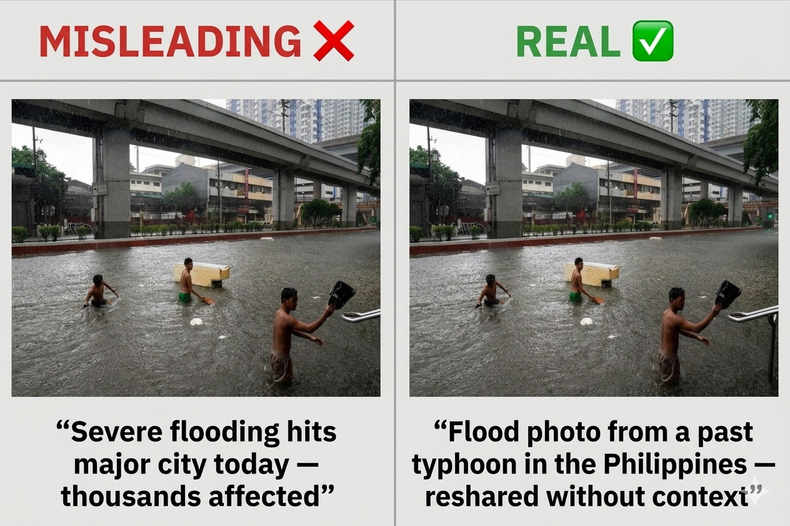
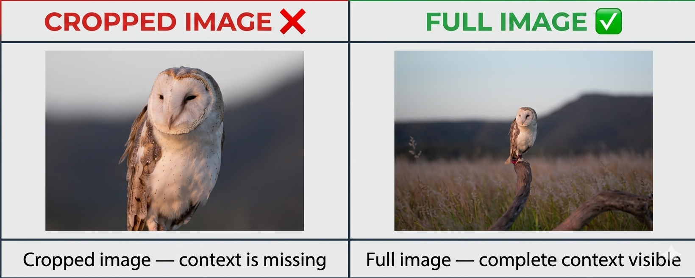
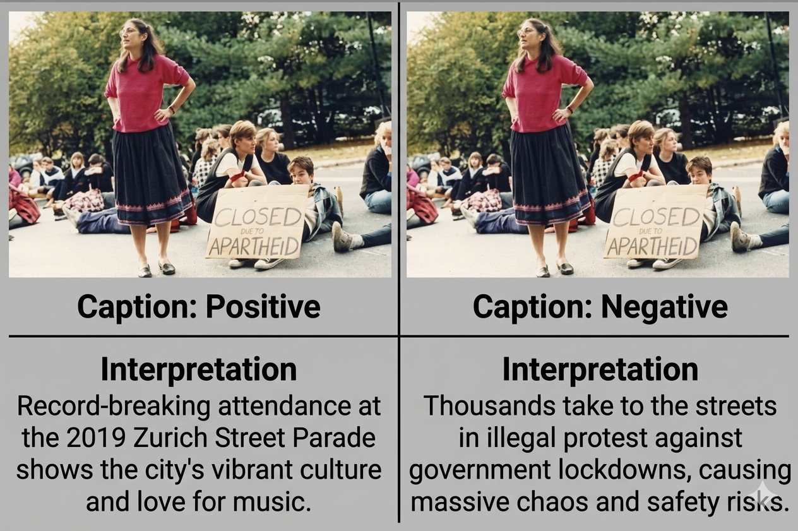

Viral images are designed to capture attention instantly. They spread fast, often triggering strong emotional reactions before viewers have time to question their authenticity. But this speed is precisely what makes them dangerous—because by the time doubt appears, the image has already been shared thousands of times.
To evaluate a viral image critically, we must shift from reacting to analyzing. Instead of asking “Is this shocking?”, the better question is: “Does this image hold up under scrutiny?”
Why Viral Images Spread Quickly
Viral images often succeed because they appeal to emotion—shock, anger, sympathy, or curiosity. This emotional impact reduces skepticism and increases the likelihood of sharing without verification.
Understanding this intent is important. Many misleading images are not random—they are crafted or selected specifically to provoke reaction rather than reflection.
The more emotional an image makes you feel, the more carefully you should examine it.
Visual Red Flags in Images
At first glance, a viral image may appear convincing. However, closer inspection often reveals inconsistencies that suggest manipulation or fabrication.
-
1
Unnatural Details
Look for distorted faces, hands, text, or objects that do not align with reality.
-
2
Lightning Inconsistencies
Shadows and reflections may not match the scene or light source.
-
3
Blurring or sharp cut edges
Edited areas may appear smoother or more pixelated than the rest of the image.
-
4
Repeating Patterns
Background elements may repeat unnaturally, suggesting AI generation or cloning.
These visual clues do not confirm that an image is fake, but they should prompt further investigation.
Context and Caption Manipulation
An image does not need to be edited to be misleading. Often, the deception lies in how it is presented rather than how it was created.
1. Misleading Context Through Caption Manipulation

As shown above, the same image can be interpreted differently depending on the caption attached to it. This demonstrates that misleading content does not always come from edited visuals, but from how information is framed and presented to the audience.
- The same image can be reused with different captions to create different meanings.
- Misleading captions often add false details such as incorrect location, date, or event.
- Context can be removed or altered to support a specific narrative or claim.
- Images shared on social media may lack original sources or proper attribution.
- Verifying the caption and context is just as important as verifying the image itself.
2. Context Removal Through Cropping

As shown in the figure above, cropping an image can significantly alter how it is interpreted. By removing surrounding elements, important context may be lost, leading viewers to draw conclusions that differ from the original scene.
- Cropping removes parts of the image that may contain important context.
- Different framing can make a situation appear more dramatic or misleading.
- Viewers may misinterpret the image if they only see a portion of the original scene.
- The full image often provides a more accurate understanding of what is happening.
3. Same Image Used for Different Contexts

This figure shows how a single image can lead to different interpretations depending on the context in which it is presented. Even if the visual content remains unchanged, altering the caption or surrounding information can influence how viewers understand the image.
- The same image can be associated with different meanings when paired with different captions.
- Captions can influence perception by adding or changing the narrative.
- Lack of proper context may lead to misunderstanding or misinformation.
- Images alone may not fully represent the intended message without supporting information.
Source and Credibility Check
A critical step in verification is identifying where the image came from. Viral images often circulate without clear attribution, which should immediately raise concern.
- No original source or photographer is credited
- The image appears only on social media, not in reputable news outlets
- The account sharing it has a history of sensational or misleading posts
Credible sources typically provide context, timestamps, and supporting information. The absence of these elements is a warning sign.
When Real Images Become Misleading
Not all misleading images are fake. In many cases, real images are used in ways that distort their meaning.
Some misleading images include:
- Cropped images remove important context
- Selective framing exaggerates or hides details
- Images are reused to represent unrelated events
This highlights a key point: authenticity of the image does not guarantee accuracy of the message.
What We've Learned
Detecting whether a viral image is fake requires more than spotting visual errors. It involves analyzing emotional impact, questioning context, and verifying sources. While visual inconsistencies can provide clues, they must be combined with deeper investigation.
In a digital environment where images spread rapidly and widely, the responsibility shifts to the viewer. By slowing down and applying critical thinking, we can reduce the spread of misleading content and make more informed judgments about what we see.
A viral image’s popularity does not make it true. Always verify before you share.